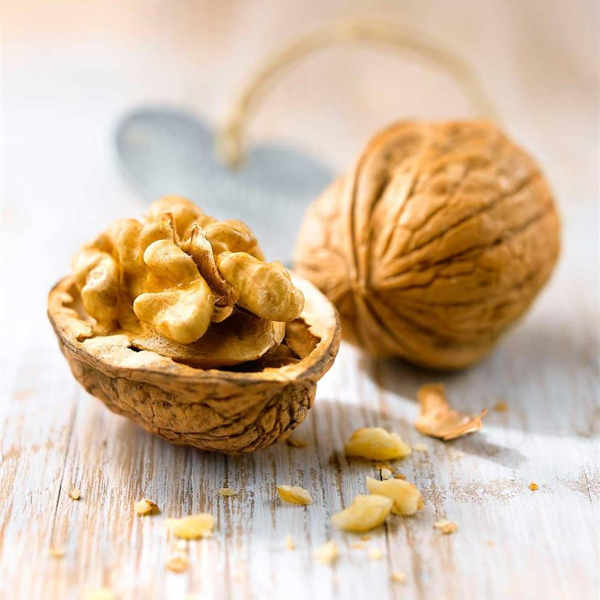

Los frutos secos comprenden un grupo genérico de productos que son en realidad granos, semillas o frutas. Tienen en común una baja concentración de agua y un elevado contenido en grasas.Numerosos de una dieta equilibrada. Estas estudios han evidenciado la importancia para la salud de su consumo diario y los beneficios específicos para el corazón y el sistema circulatorio en el contexto propiedades saludables se basan en diferentes componentes bioactivos.
Por un lado, sus grasas protegen frente a la aparición y desarrollo de la aterosclerosis debido a la ausencia total de colesterol y a su capacidad para disminuir el colesterol sanguíneo total, y en concreto su fracción LDL, conocida popularmente como "colesterol malo. A este efecto, ya de por sí beneficioso, se añade el hecho de que consumirlos mantiene o incrementa de forma ligera el colesterol HDL ("el bueno"), por lo que el riesgo cardiovascular total disminuye.En segundo lugar destaca la presencia de compuestos con capacidad antioxidante. La acción de los radicales libres, generados por los procesos oxidativos que se producen continuamente en el organismo, requieren que los mecanismos de defensa orgánicos sean complementados por agentes externos como algunas vitaminas, minerales u otras sustancias contenidas en los alimentos, como los polifenoles. Los aceites de frutos secos también son una buena fuente de nutrientes saludables, pero carecen de la fibra que se encuentra en los frutos secos enteros. El aceite de nuez es el que tiene mayor cantidad de omega-3. Considera la posibilidad de utilizar aceites de frutos secos en el aderezo casero para ensaladas o en la cocina. Cuando cocines con aceites de frutos secos, recuerda que responden de manera diferente al calor que los aceites vegetales y que pueden volverse amargos si se calientan demasiado. Úsalos con mesura, ya que son altos en grasas y en calorías.

La nuez es un fruto con altos niveles de polifenoles, compuestos químicos antioxidantes que ayudan a prevenir daños celulares.